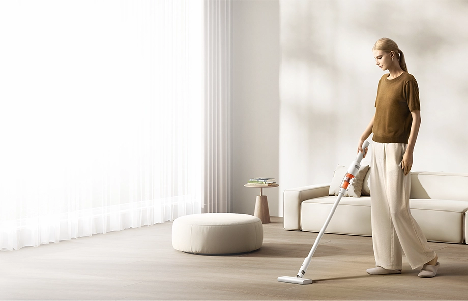
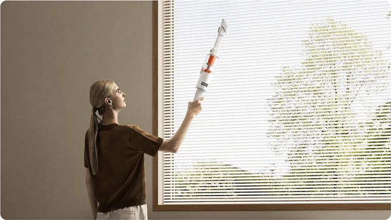
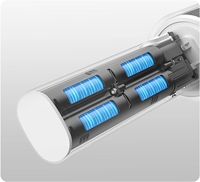
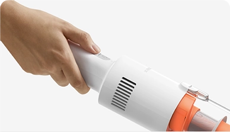
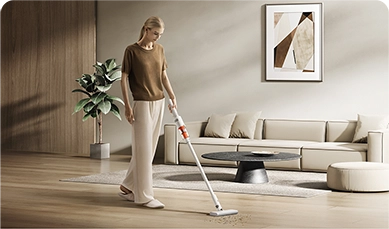
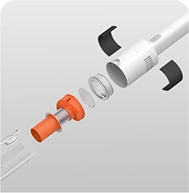
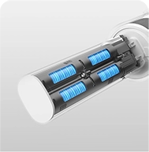
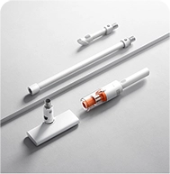

Xiaomi Vacuum Cleaner P30

Lekka jednostka centralna o wadze 860 g* w zestawieniu ze szczotką szczelinową 2 w 1 sprawdza się podczas czyszczenia wysokich partii pomieszczeń, takich jak sufity czy wiszące tkaniny.

Dzięki zastosowaniu 4 akumulatorów litowo-jonowych o pojemności 2000 mAh* odkurzacz może pracować do 40 minut* w trybie Eco z różnymi końcówkami oraz do 10 minut* w trybie Turbo. Efektywna i długotrwała moc ssania zwiększa komfort sprzątania i ogranicza przerwy na ładowanie.

Dzięki zastosowaniu 4 akumulatorów litowo-jonowych o pojemności 2000 mAh* odkurzacz może pracować do 40 minut* w trybie Eco z różnymi końcówkami oraz do 10 minut* w trybie Turbo. Efektywna i długotrwała moc ssania zwiększa komfort sprzątania i ogranicza przerwy na ładowanie.
Dzięki zastosowaniu 4 akumulatorów litowo-jonowych o pojemności 2000 mAh* odkurzacz może pracować do 40 minut* w trybie Eco z różnymi końcówkami oraz do 10 minut* w trybie Turbo. Efektywna i długotrwała moc ssania zwiększa komfort sprzątania i ogranicza przerwy na ładowanie.
Dzięki zastosowaniu 4 akumulatorów litowo-jonowych o pojemności 2000 mAh* odkurzacz może pracować do 40 minut* w trybie Eco z różnymi końcówkami oraz do 10 minut* w trybie Turbo. Efektywna i długotrwała moc ssania zwiększa komfort sprzątania i ogranicza przerwy na ładowanie.

DCI-P3
sRGB
eee
umulatorów litowo-jonowych o pojemności 2000 mAh* odkurzacz może pracować do 40 minut* w trybie Eco z różnymi końcówkami oraz do 10 minut* w trybie Turbo. Efektc ssania zwiększa komfort sprzątania i ogranicza przerwy na ładowanie.




Rozdzielczość 3200 × 1800
Obiektyw 6 megapikseli zaprojektowany z
myślą o wysokiej jakości ee obrazu.
Duży przetwornik obrazu
1/2,45 cala
Kolorowy obraz również przy minimalnym oświetleniu
otoczenia. fffffff
Rozdzielczość 3200 × 1800
Obiektyw 6 megapikseli zaprojektowany z
myślą o wysokiej jakości ee obrazu.
Duży przetwornik obrazu
1/2,45 cala
Kolorowy obraz również przy minimalnym oświetleniu
otoczenia. fffffff
Uwagi:
1. Prezentowana wizualizacja ma charakter wyłącznie poglądowy i służy demonstracji zgodności. Xiaomi Tag nie jest wspierany, sponsorowany ani w żaden sposób powiązany z Google LLC (Limited Liability Company) ani Apple Inc. Nazwy Google oraz Find Hub stanowią znaki towarowe Google LLC (Limited Liability Company), natomiast Apple i Find My są znakami towarowymi Apple Inc.
2. Jest kompatybilny z telefonami i tabletami wyposażonymi w Android 9 lub wyższą wersję dzięki Google Find Hub.
3. Obsługuje iPhone i iPad z systemem iOS 14.5 lub iPadOS 14.5 lub nowszym za pośrednictwem Apple Find My.
4. Google Find Hub i Apple Find My nie są obsługiwane jednocześnie.
5. Dane dotyczące czasu pracy baterii pochodzą z wewnętrznych laboratoriów Xiaomi. Rzeczywiste wyniki mogą się różnić w zależności od aktualizacji oprogramowania układowego, warunków użytkowania i warunków środowiskowych.
6. Czas pracy baterii jest mierzony w następujących codziennych warunkach użytkowania: cztery wyszukiwania dźwięku dziennie. Rzeczywisty czas pracy baterii może się różnić w zależności od sposobu użytkowania, warunków środowiskowych, producenta baterii zastępczej i innych czynników.
7. Urządzenie zostało przetestowane i certyfikowane pod kątem odporności na zachlapania, wodę i kurz w określonych warunkach laboratoryjnych, z nadaną klasą szczelności IP67 zgodnie z normą IEC (International Electrotechnical Commission) 60529:1989+A1:1999+A2:2013. Należy pamiętać, że warunki testowe odporności na wodę obejmują zanurzenie w nieruchomej słodkiej wodzie do głębokości 1 m, przez maksymalnie 30 minut, przy różnicy temperatur między wodą a produktem wynoszącej 5 K lub mniej. Taka odporność na wodę dotyczy wyłącznie określonych warunków testowych w środowisku laboratoryjnym i nie odpowiada zwykłym warunkom użytkowania przez konsumentów. Dlatego ochrona przed wnikaniem nie jest gwarantowana, jeśli produkt zostanie poddany działaniu warunków wykraczających poza te testowe. Zalecamy, aby nie próbować tego samodzielnie. Nie zaleca się używania na plaży ani w basenie. Ochrona przed wnikaniem może ulec pogorszeniu na skutek codziennego zużycia, uszkodzeń fizycznych i/lub demontażu w celu naprawy. Należy unikać wymiany baterii lub używania fizycznego przycisku, gdy produkt jest narażony na kontakt z wilgocią. Prosimy o uważne zapoznanie się z instrukcją obsługi w celu uzyskania innych wskazówek dotyczących bezpieczeństwa. Gwarancja nie obejmuje uszkodzeń spowodowanych działaniem cieczy w warunkach wykraczających poza zakres testu IP67.
8. Urządzenie Xiaomi Tag wysyła sygnały Bluetooth, a jego wykrywanie zależy od infrastruktury sieci „Find My Device” obsługiwanej przez podmioty trzecie. Sygnał jest rozpoznawany tylko w ramach danej sieci. Apple Find My i Google Android Find Hub funkcjonują oddzielnie, więc nie współpracują w zakresie lokalizacji.
9. Powiadomienia o pozostawieniu są obsługiwane wyłącznie w Apple Find My.
10. Można dodać maksymalnie 20 częstych lokalizacji.
11. Obsługa mechanizmu antyśledzenia jest powiązana z działaniem sieci Find. Aktualne wytyczne znajdują się na oficjalnych stronach Apple Find My oraz Google Find Hub.
*Zdjęcia i wizualizacje na tej stronie służą celom ilustracyjnym i nie muszą w pełni oddawać wyglądu produktu. Faktyczny interfejs może odbiegać od prezentowanego. W celu uzyskania dokładnych informacji należy odnieść się do rzeczywistego urządzenia.